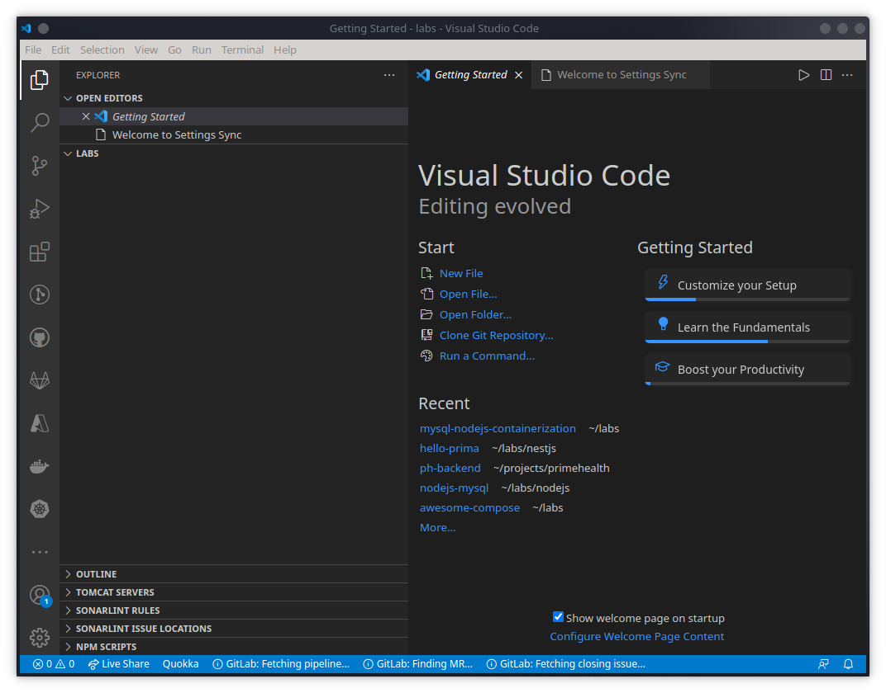
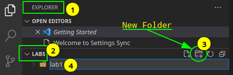
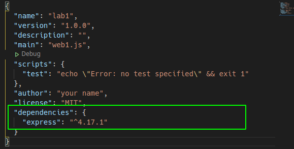
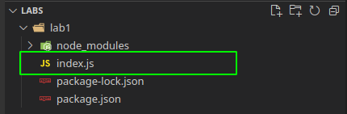

I. Lingkungan Pengembang Aplikasi
Tujuan Instruksional Khusus:
- Peserta akan menggunakan lingkungan pengembangan untuk menulis program dengan NodeJS dan MySQL dan menjalankannya.
Kebutuhan Perangkat Lunak:
- Desktop/Laptop dengan Windows 10.
- Terinstall Integrated Development Environment (IDE) misal: VSCode
- Terinstall nodejs dan npm
- Terinstall curl
- Terinstall MySQL server dan client
- Terinstall docker
- Terinstall docker-compose
Instruksi
Langkah 1: Menguji lingkungan Pengembangan (15 menit)
- Aktikan PowerShell
c:\>
- Apakah NodeJS dan NPM sudah terinstall ?
c:\> node -v
c:\> npm -v
- Apakah curl sudah terinstall?
c:\> curl --version
- Apakah MySQL Client dan Server sudah terinstall?
c:\> mysql --version
c:\> mysql -uroot -p
mysql> CREATE DATABASE mydb;
mysql> SHOW DATABASES;
mysql> exit;
c:\>
- Apakah docker sudah terinstall?
c:\> docker -v
c:\> docker images
c:\> docker ps -a
c:\> docker run hello-world
c:\> docker ps -a
- Apakah docker-compose sudah terinstall ?
c:\> docker-compose -v
c:\> dir *.yml
c:\> $yml=@"
version: "3.9"
services:
hello:
image: hello-world:latest
"@ > hello.yml
c:\> dir *.yml
c:\> docker-compose -f hello.yml up
c:\> docker-compose -f hello.yml ps
c:\> docker-compose -f hello.yml down
c:\> docker-compose -f hello.yml ps
- Apakah Visual Code (VSCode) sudah terinstall?
c:\> code .
<Setelah vscode aktif, keluar dengan ctrl-q >
Catatan:
- Jika terdapat Error pada setiap instruksi diatas, hubungi fasilitator
- Fasilitator akan memberitahukan username dan password untuk akses ke mysql.
- Untuk menghubungi fasilitator, gunakan public chat yang tersedia, sertakan nama, mesin yang digunakan, penjelasan singkat masalah yang dihadapi. Fasilitator akan segera membantu.
Langkah 2: Inisialisasi Web Aplikasi dengan NodeJS (15 menit)
- Buat folder untuk mengorganisasikan kumpulan berkas yang akan dibuat untuk pengembangan web aplikasi.
c:\> md c:\labs
c:\> cd c:\labs\
- Aktifkan VSCode pada folder yang baru dibuat:
c:\> code .
Catatan:
- Sertakan "." pada akhir perintah code.

- Buat Folder baru dengan nama "lab1" untuk menyimpan berkas-berkas yang akan dibuat untuk lab pertama.

Catatan:
- Arahkan mouse pada bagian "EXPLORER"
- Buka (Expand) LABS jika masih Tertutup (Collaps)
- Click Icon "New Folder"
- Masukkan nama folder yang akan dibuat: "lab1"
- Aktifkan terminal dengan menekan tombol ctrl-` (control backquotes - terletak diatas tombol tab) dan pastikan folder yang aktif adalah lab1, jika selainnya aktifkan folder lab1.
c:\> cd
..\lab
c:\> dir
c:\> cd lab1
c:\> cd
..\lab1
- Inisialisasi aplikasi nodejs, dengan menggunakan npm init, dan penuhi masukan seperti contoh dibawah ini:
- package name: lab1, atau enter untuk nilai tetap
- version: 1.0.0, atau enter untuk nilai tetap
- description: <kosong>, silahkan tambahkan penjelasan atau enter untuk nilai tetap
- entry point: index.js
- test command: <kosong>, enter untuk nilai tetap
- git repository: <kosong>, enter untuk nilai tetap
- keywords: <kosong>, enter untuk nilai tetap
- author: <kosong>, masukkan nama sendiri
- licensi: (ISC), masukkan MIT atau enter untuk nilai tetap
- Is this OK ?, enter untuk nilai tetap
c:\> npm init
This utility will walk you through creating a package.json file.
It only covers the most common items, and tries to guess sensible defaults.
See `npm help init` for definitive documentation on these fields
and exactly what they do.
Use `npm install <pkg>` afterwards to install a package and
save it as a dependency in the package.json file.
Press ^C at any time to quit.
package name: (lab1)
version: (1.0.0)
description:
entry point: index.js
test command:
git repository:
keywords:
author: your name
license: (ISC) MIT
About to write to ../lab1/package.json:
{
"name": "lab1",
"version": "1.0.0",
"description": "",
"main": "index.js",
"scripts": {
"test": "echo \"Error: no test specified\" && exit 1"
},
"author": "your name",
"license": "MIT"
}
Is this OK? (yes) /1m8,1s
Catatan:
- perintah npm init diatas akan membuat berkas package.json, yang merupakan berkas utama untuk setiap aplikasi nodejs.

- Untuk membuat aplikasi seringkali dibutuhkan pustaka perangkat lunak pembantu untuk mempercepat pembuatan aplikasi. Pustaka Express dapat digunakan untuk membuat aplikasi web, dan perintah npm install untuk menambahkannya.
c:\> cd
..\lab1
c:\> npm install --save express

Catatan:
- perintah npm install akan memuat pustaka dari internet dan meletakkannya pada folder node_modules
- Ketergantungan (Dependencies) pada pustaka akan ditulis ke berkas package.json karena menggunakan opsi --save.
- Setelah ditulis pada package.json, ketergantungan pustaka dapat dimuat ulang dengan cukup memberikan perintah: npm install
Langkah 3: Membuat minimal web aplikasi (15 menit)
- Pastikan pada vscode folder yang aktif adalah lab1, buat minimal Web Aplikasi pertama dengan Framework Express, pada VSCode tekan ctrl-N untuk membuat berkas baru, .
- Ketikkan perintah berikut pada wilayah sunting (editor)
const express = require('express') const app = express() const port = 3000 app.get('/', (req,res) => { res.send("Hello World") }) app.listen( port, () => { console.log("Minimal Web Aplikasi http://localhost:${port}") })
Catatan:
- Aplikasi ini akan menanggapi akses pada port 3000, dan memberikan tanggapan "Hello World" terhadap root URL (/) atau root route. Jika diberikan rute atau path yang lain, aplikasi akan memberikan tanggapan 404 Not Found.
- Simpan pada folder lab1 dengan nama index.js

- Jalankan web aplikasi dan lihat hasilnya dengan curl atau web browser.
c:\> node index.js
- Buka terminal powershell lain dan jalankan
c:\> curl localhost:3000
Hello World
- Atau aktifkan favorit browser dan ketikkan pada url: localhost:3000